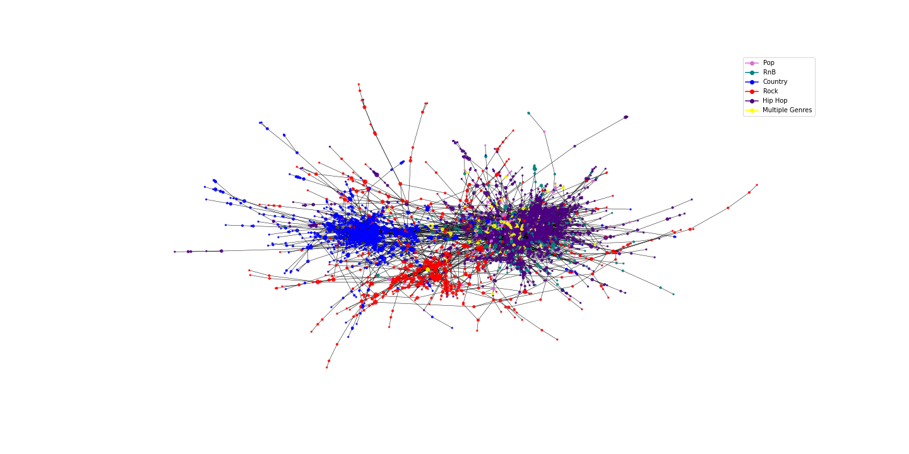
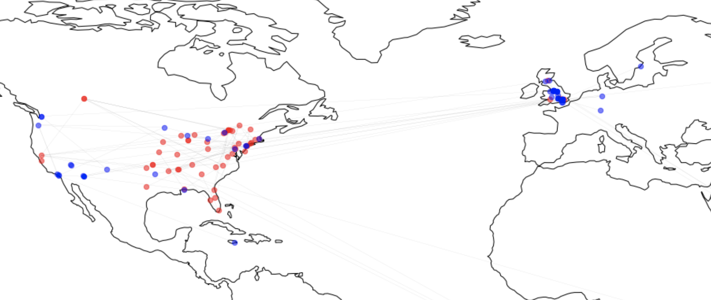

In this part of the study the network will be created and analyzed. The network will be created such that nodes represents artists and links represents links between wikipedia pages. If an artist's page links to another artist's page these nodes will share a directed link. Thus the initial network is directed. From the initial network the Giant Connected Component (GCC) will be extracted and analyzed. Due to a high degree density a backbone analysis with a disparity filter will be carried out. The result of the backbone analysis is a smaller network, where only significant links appear. The backbone network will be used for further analysis. Due to the way that the links are weighted in the backbone analysis, the network needs to be undirected. Therefore, the network is saved as an undirected network, which forms the foundation of the rest of the analysis. In the end communities are created in an attempt to figure out, how well the network actually represents common assumptions of linkages between music artists.
On the Data Description page, it is explained in detail, how Wikipedia pages and Genius is used to collect information on each of the artists in the genres: Pop, Hip Hop, RnB, Rock & Country. Below we see the first iteration of the network built. Here the Giant Connected Component (GCC) has been extracted to focus on the most interconnected artists. This is shown in the network visualization below. The network consists of 5942 nodes and 68117 links.
Due to the large number of nodes and links, it is close to impossible to see the specific connections in the network. However, it is remarkable, that there is clear
separation between the different genres. The top left part of the network is dominated by Hip Hop artists. The red and blue nodes, representing Rock and Country
artists respectively, are equally isolated in different parts of the network graph. The RnB artists are located very close to the Hip Hop artist, which makes
sense when relating it to the common conception about the similarities in these genres. Also, it has been discovered for the yellow nodes – namely, the artists
contained in multiple genres – that most of these artists are exactly in both the Hip Hop and RnB categories. When it comes to the Pop artists, their position in
the middle of the network graph also conceptually matches with the fact, that many Pop artists will use elements from different genres in an attempt to be “popular” for everyone.
Next we look into the degree distribution of the network. In the figure below this is shown for each of the genres. If you want to compare the genres separately,
then click their respective name in the legend on the right. Also, keep in mind the total number of artists in each genre shown on the Data page when
looking at the scale-difference here.
The degree distribution of the genres seems most reminiscent of a power-law distribution, but the genres Hip Hop and Rock could also be fitted with a Poisson distribution. It is also noticeable that there clearly are a few artists in each category with a lot more links than the rest of the artists, which indicates a presence of hubs. To inspect these a bit more, the 15 most connected artists are shown in the table below. As it happens these names coincide with some of the most popular artists of all time.
{% include table_deg.html %}
The average degree of the network is
In order to conduct the backbone analysis, the links of the network should be weighted in a way that represents the importance of the indivial links. For this
analysis the weight of a link is chosen to be equal to the number of times it is included on the wiki pages - in both directions. This means that if node
i mentions node j two times, and node j mentions node i once, then the resulting weight of the link will be 3.
This leads to the conclusion, that the network must be undirected for this weighting to be possible.
The Disparity Filter method for extracting the backbone can then be carried out according to the presented technique in
this article from 2009 by M. A. Serrano et al. The purpose of The Disparity Filter
method is to find a significance level α for which a sufficient amount of link-weight is kept in the network, while the total number of edges
is greatly reduced. In order to select a suitable significance level α we look at the figure below. On the left we se NB/NT
as a function of WB/WT at different significance levels, where N is nodes and W is weight and the
subscripts B and T refers to the backbone and total network repectively.
To the right NB/NT is plotted against the number of edges E kept at different significans levels.
One could argue for different levels of α as the most optimal one. In this case the weight kept (left plot) is more or less proportional to the value of α. Hence it can be considered that the significance level α can be chosen by mostly looking at the right graph. By looking at the right graph the value α = 0.1 seems reasonable. With α = 0.1 more edges are removed while keeping as many nodes as possible, when compared to higher values of α. Thus for this study α = 0.1 is the chosen significance level in the disparity filter.
It is obviously a bit subjective decision that have to be made on which significance level that is be chosen. But we argue in this case,
that because the weight kept
is more or less directly proportional to the value of α, then we can choose from looking mostly at the right graph of the edges kept. Here it is clear
that there up to α = 0.1 we get to remove more edges than at higher α values - therefore this is the chosen significance level.
When the backbone is extracted, it looks like the network shown below. The number of nodes have been reduced to 2955 and the number of links to 4701. This means
that we get to keep more than 60% of the nodes while only retaining less than 10% of the links, and that is exactly what the goal of this section is about.
In the network visualisation below it is also evident, that we still have good seperation between the genres, even with a lot fewer links.

To compare the backbone to the old network we also look at the 15 most connected artists again. Most of them are the same as before the backbone was extracted, but there are also some differences. E.g. Michael Jackson is no longer in the top 15 most linked artists. Instead there is some new names such as Missy Elliot and Mariah Carey.
{% include top_20.html %}Now that the network only contains what we find to be the "important" links, the communities are found. This is done with the Louvain algorithm, which is an approximation algorithm that tries to maximize the modularity score Q. When implementet on the backbone network, we end up with 38 communities and a modularity score of Q = 0.76, which indicates a fairly good partition. In the bar chart below, the size of all communities are shown. The individual communities are named after the 3 nodes with the highest degree in the community.
{% include com_size.html %}
As mentioned, a goal with this page is to study whether or not the communities compare to the some common conception about the artists
relations. Therefore, the number of artists within each genre in each community is also shown above. Clearly, a lot of the communities are dominated by a
a single genre, but there are also expections such as the communities Nicki Minaj, Chris Brown, Beyoncé and Mariah Carey, Whitney Houston, Michael Jackson.
Remember again here, that there are not equally many artists in each genre in the whole network, and therefore these two communities can be seen as quite "diverse".
To look closer at some of the largest communities, an interactive visualisation can be seen below. Here the two country communities Carrie Underwood, Reba McEntire,
Taylor Swift and Johnny Cash, Willie Nelson, Elvis Presley are shown together with the rock community Nirvana (band), Radiohead, Alice in chains,
and the Hip Hop communities Eminem, Dr. Dre, Snoop Dogg and Kanye West, Drake (musician), Rihanna. Futhermore the two mixed communities
Mariah Carey, Whitney Houston, Michael Jackson and Nicki Minaj, Chris Brown, Beyoncé are included. You can zoom in on the different
communities to look at the individual artists in each of them. If you are into music, you will hopefully agree, that most of the artists are in a community that
seems sensible. There are of course also examples of nodes/artists that might not seem to belong in their community, e.g. DJ Tiësto and Swedish House Mafia might not
be a natural inclusion with Nirvana and the other rock bands. Another thing to notice is how the two mixed communities also have more yellow nodes. The fact that
these artists who are in multiple genres are represented more in these communities could indicate, that they also can act as links between artists in
different genres.
We have now seen how the genres generally offer a good explanation for the community partition. However, one thing that is still left unanswered is what causes there to be multiple cummunities dominated by the same genres and not just a single one. In the next section we seek to explain some of this by looking into time and space attributes of the communities. The graph below shows when the artists from a selection of communities started their careers.
{% include com_year.html %}
If you select the first two communities on the legend
to the right of the graph, you will se that there indeed is some temporal difference between these two Country communities. Most of the artists in Johnny Cash, Willie Nelson, Elvis Presley
started their career around the 1960s, where the artists in Carrie Underwood, Reba McEntire, Taylor Swift mostly started their career after 1980.
The exact same can be seen if you instead select the next three communities - namely the hip hop communities. Here we see that most of the artists in
Eminem, Dr. Dre, Snoop Dogg started their career between 1985-1995, in Kanye West, Drake (musician), Rihanna they started between 2004 and 2014 and in
the community of new rappers XXXTentacion, Lil Durk, Juice Wrld almost all started after 2010. Again, for the last two communities before refered to
as to mixed communities, the same can be said.
The next explanation the separation of communities is related to where in the world the artits come from. On the map below are two of the biggest communities dominated
by rock artists shown. The nodes position on the map corresponds to the artist's origin. Here it can be seen how one community almost only originates from North
America, while the other community contains a lot of artists from the UK.

On this pages, the linkage of music artists in and between different genres have been explored. In total we can conclude on multiple facts about the network. First, that already in the first network with many nodes and links, the genres seem to be a good partitioner for the network - this could be seen in the first network plot on this page. Secondly it was discovered that the network was so densely connected that analysis could become difficult, therefore the backbone of the network was extracted. With the method applied we removed more than 90% of the links while still keeping most of the important information. Other than making the network more manageable, the backbone analysis made it possible to devide the network into communities of sensible sizes. The goal was to evaluate communities on the basis of how well they represent common assumptions of linkages between music artist. This obviously leads to a very subjective judgement of the communities, but all in all we conclude that the communities to a large extend represents the linkages one would have assumed. In part this can be explained by temporal and spacial attributes and of course the genres of the artists.